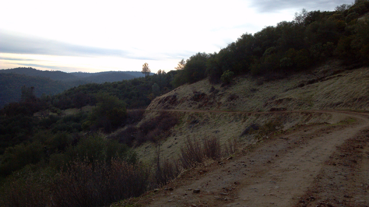
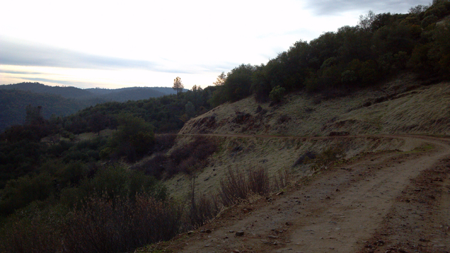

winter 2013, biddle's escape
a little about me
this past winter, i returned to pittsburgh after travelling in california for a few months. backpack style, i visited and stayed with friends and communities throughout the state in exchange for cooking, tending to plants - including pruning (ie climbing and sawing limbs off) trees - landscaping, chicken-raising, cat-sitting and actually, some website design. while visiting a yoga sanctuary in the sierra nevada foothills, i was new to wordpress, but so was the yogi i was working for. and because he'd rather meditate, i glady assumed the role of - well i wouldn't dare say "web designer" - but rather, the all-too-familiar role of "self-teacher". the trip was also to decide if i might become a permaneant cali gal, but afterall, decided pittsburgh was where i wanted to be.
can you touch the top of the tree?
 
